Explore the empty mind of a college student entering adulthood through her reviews of the multitude (maybe like 20...not even) video games she's played since she was a child. Don't want to explore? Okay, fine. Click below to jump straight to the reviews of my top 5 games. Who knows, maybe you'll learn something? Or not...
Top 5 GamesGaming Devices
Below are the three main devices I use for gaming. I started using Nintendo gaming systems when I was 6 or 7. I graduated to a PS4 when I was about 14 and only recently have I been sucked into the world of personal computer gaming.
